주택관리사보-1차 (2017-07-15 기출문제)
1과목: 민법
1. 관습법과 사실인 관습에 관한 설명으로 옳은 것은? (다툼이 있으면 판례에 따름)
- 사회의 거듭된 관행이 관습법으로 승인되었다면, 그것이 적용될 시점에 전체 법질서와 부합하지 않더라도 효력이 인정된다.
- 상행위와 관련된 법률관계에서는 민법이 상관습법에 우선한다.
- 관습법은 당사자의 주장∙증명이 없으면 법원이 직권으로 이를 확정할 수 없다.
- 사실인 관습이 강행규정에 관한 것이더라도, 강행규정에서 관습에 따르도록 위임한 경우라면 그 관습에 대하여 법적 효력을 부여할 수 있다.
- 물권은 관습법에 의하여 창설될 수 없다.
(정답률: 54%)

2. 사권(私權)에 관한 설명으로 옳지 않은 것은? (다툼이 있으면 판례에 따름)
- 토지 임차인의 지상물매수청구권은 형성권이다.
- 채권자취소권은 소로써만 행사할 수 있다.
- 청구권은 채권뿐만 아니라 물권으로부터도 생긴다.
- 하자담보책임에 기한 토지 매수인의 손해배상청구권은 제척기간에 걸리므로, 소멸시효 규정의 적용이 배제된다.
- 항변권은 상대방의 청구권 자체를 소멸시키는 권리가 아니라 그 작용을 저지할 수 있는 권리이다.
(정답률: 52%)
3. 신의성실의 원칙(이하 ‘신의칙’)에 관한 설명으로 옳은 것은? (다툼이 있으면 판례에 따름)
- 신의칙에 위반하는지 여부는 당사자의 주장이 없는 한 법원이 직권으로 판단할 수 없다.
- 강행법규를 위반한 자가 스스로 그 약정의 무효를 주장하는 것은 특별한 사정이 없는한 신의칙에 위반되어 허용되지 않는다.
- 인지(認知)청구권을 장기간 행사하지 않아서 상대방에게 더 이상 그 권리를 행사하지 않을 것이라고 신뢰할 만한 정당한 기대가 형성되었다면, 인지청구권은 실효된다.
- 신의칙은 사인간의 법률관계에만 적용되므로, 일반 행정 법률관계에서의 관청의 행위에 대하여는 적용될 여지가 없다.
- 채무자의 소멸시효에 기한 항변권의 행사에 대해서도 신의칙이 적용될 수 있다.
(정답률: 36%)
4. 권리능력에 관한 설명으로 옳은 것은? (다툼이 있으면 판례에 따름)
- 법인의 권리능력은 정관에 명시된 목적 자체에 국한된다.
- 제3자의 불법행위로 태아가 사산된 경우에는 모(母)가 태아의 손해배상청구권을 상속한다.
- 동시사망의 추정은 사실상의 추정이 아니라 법률상의 추정이다.
- 증여에 관하여는 태아의 수증능력이 인정되지 아니하나, 그 법정대리인에 의한 수증행위는 가능하다.
- 권리능력은 사망신고에 의해 상실된다.
(정답률: 45%)
5. 2017. 6. 3. 15세인 甲이 친권자 乙의 동의 및 처분허락 없이 본인 소유의 자전거를 丙에게 30만 원에 매도하였다. 이에 관한 설명으로 옳지 않은 것은? (다툼이있으면 판례에 따름)
- 甲은 乙의 동의 없이 매매계약을 취소할 수 있다.
- 2017. 7. 14. 甲이 乙의 동의 없이 丙에 대한 대금채권을 丁에게 양도한 후 丙에게 양도사실을 통지하였다면, 甲은 매매계약을 취소할 수 없다.
- 甲과 丙이 제한능력자에 관한 규정의 적용을 배제하기로 약정하였더라도 乙은 매매계약을 취소할 수 있다.
- 丙이 乙에게 1개월 이상의 기간을 정하여 매매계약에 대한 추인 여부의 확답을 촉구한 경우, 乙이 그 기간 내에 확답을 발송하지 아니하면 이를 추인한 것으로 본다.
- 丙이 계약체결 당시 甲이 미성년자라는 사실을 알았다면, 丙은 乙의 추인 전이라도 자신의 의사표시를 철회할 수 없다.
(정답률: 42%)
6. 제한능력자의 법률행위에 관한 설명으로 옳은 것은? (다툼이 있으면 판례에 따름)
- 피성년후견인이 속임수로써 법정대리인의 동의가 있는 것으로 계약 상대방을 믿게 한 경우에는 그 계약을 취소할 수 없다.
- 의사무능력자는 성년후견개시 심판 없이도 피성년후견인으로서 보호된다.
- 미성년자가 단순히 자기가 성년자라고 말하여 계약 상대방을 믿게 한 경우에는 그 계약을 취소할 수 있다.
- 제한능력자의 법률행위가 취소된 경우, 제한능력자가 악의이면 그는 받은 이익 전부를 반환하여야 한다.
- 미성년자가 법정대리인의 동의 없이 시가보다 저렴한 가격으로 컴퓨터를 매수한 경우, 법정대리인은 이를 취소할 수 없다.
(정답률: 49%)
7. 부재와 실종에 관한 설명으로 옳은 것은? (다툼이 있으면 판례에 따름)
- 전쟁으로 인한 특별실종기간은 3년이다.
- 법원은 법원이 선임한 재산관리인에 대하여 부재자의 재산으로 보수를 지급할 수 없다.
- 법원이 선임한 재산관리인은 그 부재자의 사망이 확인되면 선임결정이 취소되지 않더라도 관리인으로서의 권한이 소멸된다.
- 법원이 선임한 재산관리인이 법원의 허가 없이 부재자 소유의 부동산을 매각한 후에 법원의 허가를 얻었다면, 그 처분행위는 추인한 것으로 된다.
- 실종선고를 받은 자의 직계존속은 선순위 상속인이 있더라도 상속인으로서 실종선고의 취소를 청구할 수 있다.
(정답률: 54%)
8. 민법상 법인에 관한 설명으로 옳지 않은 것은? (다툼이 있으면 판례에 따름)
- 사단법인의 사원의 지위는 정관에 의해 양도될 수 있다.
- 부동산의 생전처분으로 재단법인을 설립하는 경우, 법인의 성립 외에 부동산에 대한 등기가 있어야 법인은 제3자에 대한 관계에서 소유권을 취득한다.
- 재단법인 설립 시 출연자가 출연재산의 소유명의만을 재단법인에 귀속시키고 실질적 소유권은 자신에게 유보하는 부관을 붙여서 이를 기본재산으로 출연하는 것도 가능하다.
- 재단법인의 목적을 달성할 수 없는 때에는 설립자나 이사는 주무관청의 허가를 얻어 설립의 취지를 참작하여 그 목적 기타 정관의 규정을 변경할 수 있다.
- 법인의 이사가 수인인 경우에는 정관에 다른 규정이 없으면 법인의 사무집행은 이사의 과반수로써 결정한다.
(정답률: 55%)
9. 민법상 법인의 정관에 관한 설명으로 옳은 것은? (다툼이 있으면 판례에 따름)
- 재단법인의 기본재산이 경매절차에 의하여 매각된 경우, 주무관청의 허가가 없는 한매수인은 소유권을 취득할 수 없다.
- 사원총회의 결의에 의한 정관해석은 구성원인 사원들이나 법원을 구속한다.
- 사단법인의 정관은 이를 작성한 사원 이외에 그 후에 가입한 사원은 구속하지 않는다.
- 법인의 정관 변경은 주무관청의 허가를 얻지 않더라도 효력이 발생한다.
- 정관에 기재된 이사의 대표권 제한을 등기하지 않았더라도, 법인은 대표권 제한에 대해 알았던 제3자에게 대항할 수 있다.
(정답률: 42%)
10. 법인 아닌 사단에 관한 설명으로 옳지 않은 것은? (다툼이 있으면 판례에 따름)
- 종중의 대표가 종중명의로 타인의 금전채무를 보증하는 행위는 총유물의 처분행위에 해당하므로 종중총회의 결의가 필요하다.
- 종중의 토지에 대한 수용보상금의 분배는 총유물의 처분에 해당한다.
- 구성원 개인은 총유재산의 보존을 위한 소를 제기할 수 없다.
- 법인 아닌 사단의 채무에 대해 각 구성원은 개인재산으로 책임을 지지 않는다.
- 대표자가 직무에 관하여 타인에게 불법행위를 한 경우, 법인 아닌 사단은 손해배상책임이 있다.
(정답률: 39%)
11. 법률행위의 무효와 취소에 관한 설명으로 옳지 않은 것은? (다툼이 있으면 판례에 따름)
- 매매계약은 취소되면 소급하여 무효가 된다.
- 불공정한 법률행위로서 무효인 경우, 추인에 의하여 무효인 법률행위가 유효로 될 수 없다.
- 취소된 법률행위에 기하여 이미 이행된 급부는 부당이득으로 반환되어야 한다.
- 취소할 수 있는 법률행위는 취소권자의 추인이 있으면 취소하지 못한다.
- 취소할 수 있는 법률행위에서 법정대리인은 취소원인이 소멸한 후에만 추인할 수 있다.
(정답률: 47%)
12. 법률행위의 부관으로서 조건에 관한 설명으로 옳지 않은 것은? (다툼이 있으면 판례에 따름)
- 조건부 법률행위에 있어 조건이 공서양속에 반하는 경우, 그 조건만을 분리하여 무효로 할 수 없다.
- 조건의 성취에 소급효가 없으나 당사자가 그 성취 전에 소급하게 할 의사를 표시한 때에는 그 의사에 따른다.
- 조건이 법률행위 당시 이미 성취된 경우, 그 조건이 해제조건이면 그 법률행위는 무효로 한다.
- 조건이 법률행위 당시 이미 성취될 수 없는 경우, 그 조건이 정지조건이면 그 법률행위는 무효로 한다.
- 조건의 성취로 인하여 불이익을 받을 당사자가 신의성실에 반하여 조건의 성취를 방해한 경우, 그 방해 시에 조건이 성취된 것으로 추정된다.
(정답률: 43%)
13. 소멸시효에 관한 설명으로 옳지 않은 것은? (다툼이 있으면 판례에 따름)
- 건물소유권은 소멸시효에 걸리지 않는다.
- 채권자대위소송의 상대방은 채권자의 채무자에 대한 피보전채권이 시효로 소멸하였음을 원용할 수 있음이 원칙이다.
- 1개월 단위로 지급되는 집합건물의 관리비채권은 3년의 단기소멸시효에 걸린다.
- 가등기담보권이 설정된 부동산의 제3취득자는 그 피담보채권에 관한 소멸시효를 독자적으로 원용할 수 있다.
- 소멸시효가 완성된 채권이 그 완성 전에 상계할 수 있었던 것이면 그 채권자는 상계할 수 있다.
(정답률: 22%)
14. 甲은 2007. 5. 1. 친구 乙에게 아파트 전세자금에 사용하도록 1억 원을 변제기2007. 12. 31.로 정하여 빌려 주었다. 그런데 2017. 5. 1.이 되도록 乙은 甲에게 변제를 하지 않고 있다. 이에 관한 설명으로 옳은 것은? (다툼이 있으면 판례에 따름)
- 甲의 대여금채권은 이미 시효로 소멸하였다.
- 甲이 2017. 5. 31. 乙에게 내용증명우편으로 이행을 청구하였다면 2027. 5. 31.까지 시효중단의 효력이 발생한다.
- 乙이 2017. 5. 31. 채무를 승인하였다면 甲의 대여금채권은 2017. 12. 31.에 시효로 소멸한다.
- 甲이 2017. 5. 31. 乙을 상대로 대여금채권 1억 원의 지급을 구하는 소를 제기하여 2017. 12. 1. 승소판결이 확정된다면 그 확정된 때로부터 새로 10년의 시효가 진행된다.
- 甲이 대여금채권의 보전을 위해 乙의 재산에 대해 가압류결정을 받아 2017. 5. 31. 가압류집행을 하였더라도 시효중단의 효력은 없다.
(정답률: 44%)
15. 반사회적 법률행위로서 무효가 아닌 것은? (다툼이 있으면 판례에 따름)
- 도박으로 인한 채무의 변제를 위하여 토지를 양도하는 계약을 체결한 경우
- 법률행위의 성립과정에서 강박이라는 불법적 방법이 사용된 것에 불과한 경우
- 혼인 외의 성관계를 유지하기 위하여 증여계약을 체결한 경우
- 소송에서 사실대로 증언해 줄 것을 조건으로 통상적 수준을 현저하게 넘은 대가를 지급하기로 약정한 경우
- 부동산의 제2매수인이 매도인의 배임행위를 적극 종용하여 이중매매를 한 경우
(정답률: 39%)
16. 물건에 관한 설명으로 옳지 않은 것은? (다툼이 있으면 판례에 따름)
- 분묘에 매장된 조상의 유골은 민법이 정하는 제사용 재산인 분묘와 함께 그 제사주재자에게 승계된다.
- 농작물을 권원 없이 타인의 토지에서 경작하고 그 농작물이 성숙하여 독립한 물건이 되었으면 그에 대한 소유권은 경작자에게 있다.
- 입목에 관한 법률에 의한 입목은 토지와 독립한 동산으로 본다.
- 지상권은 1필의 토지의 일부에도 설정될 수 있다.
- 건물은 토지와 독립한 별개의 부동산이다.
(정답률: 50%)
17. 주물과 종물에 관한 설명으로 옳지 않은 것은? (다툼이 있으면 판례에 따름)
- 건물의 구성부분은 그 건물의 종물이 될 수 있다.
- 부동산도 종물이 될 수 있다.
- 당사자는 주물을 처분할 때에 특약으로 종물을 제외할 수 있다.
- 주물에 저당권이 설정된 경우, 다른 정함이 없으면 그 저당권 설정 후 주물에 부속된 종물에도 저당권의 효력이 미친다.
- 주물 자체의 효용을 일시적으로 돕거나 그 효용과 직접 관계가 없는 물건은 종물이 될 수 없다.
(정답률: 47%)
18. 동산에 해당하는 것을 모두 고른 것은?
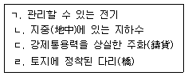
- ㄱ, ㄴ
- ㄱ, ㄷ
- ㄱ, ㄹ
- ㄴ, ㄷ
- ㄷ, ㄹ
(정답률: 47%)
19. 상대방 없는 단독행위에 해당하는 것을 모두 고른 것은? (다툼이 있으면 판례에 따름)
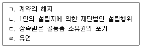
- ㄱ, ㄴ
- ㄴ, ㄷ
- ㄷ, ㄹ
- ㄱ, ㄴ, ㄷ
- ㄴ, ㄷ, ㄹ
(정답률: 52%)
20. 불공정한 법률행위에 관한 설명으로 옳지 않은 것은? (다툼이 있으면 판례에 따름)
- 대리인이 한 법률행위에 관하여 불공정한 법률행위가 문제되는 경우에 무경험은 대리인을 기준으로 판단하여야 한다.
- 불공정한 법률행위의 성립요건인 궁박, 경솔 또는 무경험은 그 중 어느 하나만 갖추면 된다.
- 급부와 반대급부 사이에 현저한 불균형이 있다고 하여 궁박, 경솔 또는 무경험에 기인한 것으로 추정되지 않는다.
- 불공정한 법률행위의 궁박은 심리적 원인에 기인한 것일 수도 있다.
- 불공정한 법률행위로서 무효가 된 경우에는 무효행위의 전환에 관한 민법 제138조가 적용될 수 없다.
(정답률: 50%)
21. 의사표시에 관한 설명으로 옳지 않은 것은? (다툼이 있으면 판례에 따름)
- 진의 아닌 의사표시의 무효에 관한 규정은 공법행위에는 적용되지 않는다.
- 사기에 의한 의사표시에서 상대방에 대한 고지의무가 있는 경우, 고지의무의 부작위는 기망행위가 될 수 없다.
- 동기가 표시되지 않았더라도 상대방에 의하여 유발된 동기의 착오는 취소할 수 있다.
- 파산자가 허위표시로 가장채권을 보유하고 있다가 파산이 선고된 경우, 파산관재인은 민법 제108조 제2항의 제3자에 해당한다.
- 표의자가 과실 없이 상대방을 알지 못하는 경우, 의사표시는 민사소송법 공시송달의 규정에 의하여 송달할 수 있다.
(정답률: 44%)
22. 민법상 임의대리에 관한 설명으로 옳지 않은 것은? (다툼이 있으면 판례에 따름)
- 소유자로부터 매매계약을 체결할 대리권을 수여받은 대리인은 특별한 사정이 없는 한 그 매매계약에서 정한 바에 따라 중도금을 수령할 수 있다.
- 대리인이 그 권한 내에서 본인을 위한 것임을 표시하지 아니하고 의사표시를 한 경우, 상대방이 대리인으로서 한 것임을 알았더라도 그 의사표시는 대리인 자신을 위한 것으로 본다.
- 권한을 정하지 아니한 대리인은 대리의 목적인 미등기 부동산의 보존등기를 할 수 있다.
- 대리인은 본인의 승낙이 있거나 부득이한 사유가 있는 때가 아니면 복대리인을 선임하지 못한다.
- 원인된 법률관계의 종료 전에 본인이 수권행위를 철회한 경우, 대리권은 소멸한다.
(정답률: 44%)
23. 표현대리에 관한 설명으로 옳지 않은 것은? (다툼이 있으면 판례에 따름)
- 강행법규에 위반하여 무효인 법률행위에도 표현대리에 관한 규정이 적용된다.
- 권한을 넘은 표현대리에서 기본대리권은 권한을 넘은 행위와 반드시 같은 종류의 것일 필요는 없다.
- 권한을 넘은 표현대리에서 정당한 이유의 유무는 대리행위시를 기준으로 판단한다.
- 권한을 넘은 표현대리에 관한 규정에서 말하는 제3자는 대리행위의 직접 상대방이 된자만을 가리킨다.
- 처음부터 대리권이 없었던 경우에는 대리권 소멸 후의 표현대리는 성립할 수 없다.
(정답률: 38%)
24. 계약에 관한 무권대리의 설명으로 옳지 않은 것은? (표현대리는 고려하지 않고, 다툼이 있으면 판례에 따름)
- 대리권 없는 자가 타인의 대리인으로 한 계약은 본인이 이를 추인하지 아니하면 본인에 대하여 효력이 없다.
- 대리권 없는 자가 타인의 대리인으로 계약을 한 경우, 상대방은 상당한 기간을 정하여 본인에게 그 추인 여부의 확답을 최고할 수 있다.
- 무권대리행위의 추인은 다른 의사표시가 없는 때에는 장래에 대하여 효력이 있다.
- 무권대리인의 상대방에 대한 책임은 무과실책임으로서 대리인의 귀책사유가 있어야만 인정되는 것은 아니다.
- 대리권 없는 자가 타인의 대리인으로 계약하고 상대방이 계약 당시에 그 대리권 없음을 알지 못한 경우, 상대방은 본인의 추인이 있을 때까지 본인에 대하여 계약을 철회할 수 있다.
(정답률: 33%)
25. 물권적 청구권에 관한 설명으로 옳지 않은 것은? (다툼이 있으면 판례에 따름)
- 소유권에 기한 물권적 청구권은 소멸시효에 걸리지 않는다.
- 소유권을 상실한 전(前)소유자는 제3자의 불법점유에 대하여 소유권에 기한 물권적 청구권을 행사할 수 없다.
- 임차인이 임차권에 기하여 토지를 점유하고 있는 경우, 임대인인 토지소유자는 임차인에게 물권적 청구권을 행사할 수 없다.
- 부동산에 대한 점유취득시효 완성을 원인으로 하는 소유권이전등기청구권은 물권적청구권이다.
- 토지의 매수인이 소유권이전등기를 경료받기 전에 매매계약의 이행으로 그 토지를 인도받은 경우, 매도인은 매수인에게 토지 소유권에 기한 물권적 청구권을 행사할 수 없다.
(정답률: 47%)
26. 신축건물의 물권변동에 관한 설명으로 옳은 것은? (다툼이 있으면 판례에 따름)
- 건물의 신축자는 보존등기를 하지 않으면 건물의 소유권을 취득할 수 없다.
- 신축건물의 보존등기를 건물 완성 전에 하였더라도 그 후 건물이 완성된 이상 그 등기를 무효라고 볼 수 없다.
- 신축건물의 보존등기 명의자는 적법한 소유자로 추정될 수 없다.
- 기존 건물 멸실 후 건물이 신축된 경우에 기존 건물에 대한 등기는 신축건물에 대한 등기로서의 효력을 가진다.
- 미등기건물의 원시취득자와 그 승계취득자의 합의에 의해 직접 승계취득자 명의로 한보존등기는 효력이 없다.
(정답률: 52%)
27. 점유에 관한 설명으로 옳지 않은 것은? (다툼이 있으면 판례에 따름)
- 점유자가 점유물에 유익비를 지출한 경우, 점유자의 선택에 좇아 그 지출금액이나 증가액의 상환을 청구할 수 있다.
- 선의의 점유자라도 본권에 관한 소에 패소한 때에는 그 소가 제기된 때로부터 악의의점유자로 본다.
- 임치 기타의 관계로 타인으로 하여금 물건을 점유하게 한 자는 간접으로 점유권이 있다.
- 점유자가 점유물에 대하여 행사하는 권리는 적법하게 보유한 것으로 추정한다.
- 폭력에 의한 점유자는 수취한 과실을 반환하여야 하며 과실로 인하여 수취하지 못한 경우에는 그 과실의 대가를 보상하여야 한다.
(정답률: 60%)
28. 공유에 관한 설명으로 옳지 않은 것은? (다툼이 있으면 판례에 따름)
- 공유물의 보존행위는 공유자 각자가 할 수 있다.
- 공유자는 다른 공유자의 동의 없이 공유물을 처분하거나 변경하지 못한다.
- 소수 지분의 공유자는 과반수 지분의 공유자로부터 사용ㆍ수익을 허락받은 점유자에 대하여 점유배제를 청구할 수 있다.
- 건물의 공유자가 상속인 없이 사망한 경우, 그 지분은 다른 공유자에게 각 지분의 비율로 귀속한다.
- 건물의 공유자가 공동으로 건물을 임대하고 보증금을 수령한 경우, 특별한 사정이 없는 한 그 보증금 반환채무는 성질상 불가분채무에 해당된다.
(정답률: 56%)
29. 지상권에 관한 설명으로 옳지 않은 것은? (다툼이 있으면 판례에 따름)
- 지상권자는 권리의 존속기간 내에서 타인에게 그 토지를 임대할 수 있다.
- 지상권자는 지상권을 유보한 채 지상물 소유권만을 양도할 수 있으나 지상물 소유권을 유보한 채 지상권만을 양도할 수는 없다.
- 수목의 소유를 목적으로 하는 지상권의 최단존속기간은 30년이다.
- 지료의 지급은 지상권의 요소가 아니어서 지료에 관한 유상 약정이 없는 이상 지료의 지급을 구할 수 없다.
- 지상권자가 2년 이상의 지료를 지급하지 아니한 때에는 지상권설정자는 지상권의 소멸을 청구할 수 있다.
(정답률: 44%)
30. 전세권에 관한 설명으로 옳은 것을 모두 고른 것은? (다툼이 있으면 판례에 따름)
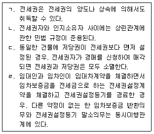
- ㄱ, ㄴ
- ㄷ, ㄹ
- ㄱ, ㄴ, ㄷ
- ㄴ, ㄷ, ㄹ
- ㄱ, ㄴ, ㄷ, ㄹ
(정답률: 44%)
31. 민법상 유치권에 관한 설명으로 옳지 않은 것은? (다툼이 있으면 판례에 따름)
- 유치권은 점유의 상실로 소멸한다.
- 유치권은 동시이행의 항변권과 병존할 수 있다.
- 유치권자는 채권의 변제를 받기 위하여 유치물을 경매할 수 있다.
- 임대인과 임차인 사이에 임차건물의 명도 시 권리금을 반환하기로 하는 약정이 있었던 경우, 임차인은 권리금반환채권을 가지고 건물에 대한 유치권을 행사할 수 있다.
- 채권자가 채무자를 직접점유자로 하여 유치물을 간접점유하는 경우에는 유치권이 성립하지 않는다.
(정답률: 34%)
32. 甲은 乙은행으로부터 1억 원을 빌리면서 그 채무를 담보하기 위하여 자신 소유의 X토지(나대지)에 1번 저당권을 설정해 주었다. 이에 관한 설명으로 옳은 것은? (다툼이 있으면 판례에 따름)
- 乙이 X토지 위에 건물 신축을 방지하기 위하여 지상권을 설정한 경우, 그 지상권은 무효이다.
- X토지의 2번 저당권자인 A가 甲의 채무 일부를 변제한 경우, A는 乙의 저당권을 대위행사할 수 없다.
- 乙의 채권이 일부 무효인 경우, 甲은 유효인 부분의 채권에 대한 변제 없이도 저당권 등기의 말소를 청구할 수 있다.
- 저당권 설정 후에 X토지의 임차인 B가 그 지상에 Y건물을 신축하고 甲이 이를 매수한 경우, 乙은 X토지와 Y건물에 대하여 일괄경매를 청구할 수 있다.
- 乙은 원본의 이행기일을 경과한 후 3년분의 지연손해에 한하여 저당권을 행사할 수 있다.
(정답률: 47%)
33. 甲에 대하여 금전채무를 부담하고 있는 乙은 자신의 유일한 재산인 X토지를 丙에게 매도하고 1개월 후 소유권이전등기를 마쳐주었다. 이에 관한 설명으로 옳지 않은 것을 모두 고른 것은? (다툼이 있으면 판례에 따름)
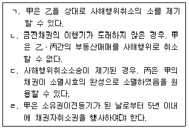
- ㄱ, ㄷ
- ㄴ, ㄷ
- ㄱ, ㄴ, ㄹ
- ㄱ, ㄷ, ㄹ
- ㄴ, ㄷ, ㄹ
(정답률: 8%)
34. 지명채권의 양도에 관한 설명으로 옳지 않은 것은? (다툼이 있으면 판례에 따름)
- 소유권이전등기청구권을 양도받은 양수인은 특별한 사정이 없는 한 채무자의 동의나 승낙을 받아야 대항력이 생긴다.
- 채권매매에 따른 지명채권의 양도는 준물권행위로서의 성질을 가진다.
- 당사자 사이에 양도금지의 특약이 있는 채권이더라도 전부명령에 의하여 전부될 수 있다.
- 채권이 확정일자 있는 증서에 의해 이중으로 양도된 경우, 양수인 상호간의 우열은 통지에 붙여진 확정일자의 선후를 기준으로 정한다.
- 임차인은 임차보증금반환채권을 임차권과 분리하여 제3자에게 양도할 수 있다.
(정답률: 38%)
35. 매매계약의 법정해제에 관한 설명으로 옳지 않은 것은? (다툼이 있으면 판례에 따름)
- 계약해제는 손해배상의 청구에 영향을 미치지 아니한다.
- 해제권자의 과실로 계약목적물이 현저히 훼손된 경우에는 해제권은 소멸한다.
- 계약에 기하여 매수인 앞으로 소유권이전등기가 마쳐진 토지를 압류하고 그 등기까지 마친 자에 대하여는 해제의 소급효로 대항할 수 없다.
- 계약이 적법하게 해제된 후에도 매수인은 착오를 원인으로 그 계약을 취소할 수 있다.
- 만약 계약이 합의해제된 경우, 민법상 해제의 효과에 따른 제3자 보호규정이 적용되지 않는다.
(정답률: 42%)
36. 매매에 관한 설명으로 옳지 않은 것은? (다툼이 있으면 판례에 따름)
- 매매예약의 완결권은 형성권에 속한다.
- 매매계약에 관한 비용은 다른 약정이 없으면 당사자 쌍방이 균분하여 부담한다.
- 타인 권리의 매매에서 매도인이 그 권리를 취득하여 매수인에게 이전할 수 없는 경우, 악의의 매수인은 매매계약을 해제할 수 없다.
- 매매목적물이 인도되지 않았더라도 매수인이 대금을 완납하였다면, 특별한 사정이 없는 한 그 시점 이후의 과실은 매수인에게 귀속한다.
- 매매 당사자 일방에 대한 의무이행의 기한이 있는 때에는 상대방의 의무이행에 대하여도 동일한 기한이 있는 것으로 추정한다.
(정답률: 42%)
37. 위임계약에 관한 설명으로 옳지 않은 것은? (다툼이 있으면 판례에 따름)
- 수임인은 위임인의 청구가 있는 때에는 위임사무의 처리상황을 보고하여야 한다.
- 무상위임의 경우에도 수임인은 선량한 관리자의 주의로 위임사무를 처리해야 한다.
- 수임인은 위임사무를 완료한 후가 아니면 위임사무처리비용을 청구할 수 없다.
- 수임인은 위임인의 승낙이나 부득이한 사유 없이 제3자로 하여금 자기에 갈음하여 위임사무를 처리하게 할 수 없다.
- 수임인은 위임사무의 처리로 인하여 받은 금전을 위임인에게 인도하여야 하며, 특별한 사정이 없는 한 그 반환범위는 위임종료시를 기준으로 정해진다.
(정답률: 50%)
38. 임차인의 부속물매수청구권에 관한 설명으로 옳지 않은 것은? (다툼이 있으면 판례에 따름)
- 일시사용을 위한 임대차가 명백한 경우, 임차인은 부속물매수청구권을 행사할 수 없다.
- 임대차계약이 임차인의 채무불이행으로 인하여 해지된 경우에는 부속물매수청구권이 인정되지 않는다.
- 임차인이 부속물매수청구권을 적법하게 행사한 경우, 임차인은 임대인이 매도대금을 지급할 때까지 부속물의 인도를 거절할 수 있다.
- 오로지 임차인의 특수목적에 사용하기 위하여 부속된 물건은 부속물매수청구권의 대상이 되지 않는다.
- 건물 임차인이 자신의 비용으로 증축한 부분을 임대인 소유로 귀속시키기로 약정하였더라도, 특별한 사정이 없는 한 이는 강행규정에 반하여 무효이므로 임차인의 부속물매수청구권은 인정된다.
(정답률: 40%)
39. 도급에 관한 설명으로 옳지 않은 것은? (다툼이 있으면 판례에 따름)
- 하자가 중요한 경우, 하자보수에 갈음하는 손해배상의 액수는 목적물의 완성시를 기준으로 산정하여야 한다.
- 완성된 건물의 하자로 인하여 계약의 목적을 달성할 수 없게 된 경우, 도급인은 계약을 해제할 수 없다.
- 일의 완성에 관한 증명책임은 보수의 지급을 구하는 수급인에게 있다.
- 공사도급계약상 도급인의 지체상금채권과 수급인의 공사대금채권은 특별한 사정이 없는 한 동시이행의 관계에 있지 않다.
- 수급인이 자기의 노력과 재료를 들여 신축할 건물의 소유권을 도급인에게 귀속시키기로 합의하였다면 그 완성된 건물의 소유권은 도급인에게 원시적으로 귀속한다.
(정답률: 38%)
40. 사용자책임에 관한 설명으로 옳지 않은 것은? (다툼이 있으면 판례에 따름)
- 민법 제35조에 따른 법인의 불법행위책임이 인정되더라도 피해자는 법인에 대하여 사용자책임을 물을 수 있다.
- 사용자에 갈음하여 그 사무를 감독하는 자도 사용자책임의 주체가 될 수 있다.
- 사용자의 피용자에 대한 구상권은 신의칙에 기하여 제한될 수 있다.
- 피용자와 제3자가 공동불법행위로 피해자에게 손해배상채무를 부담하는 경우, 사용자도 제3자와 연대하여 손해배상책임을 진다.
- 도급인과 수급인 사이에 실질적인 지휘ㆍ감독관계가 인정되는 경우, 도급인은 사용자 책임을 질 수 있다.
(정답률: 36%)
2과목: 회계원리
41. 독립된 외부감사인이 충분하고 적합한 감사증거를 입수하였고 왜곡표시가 재무제표에 개별적 또는 집합적으로 중요하지만 전반적이지는 않다는 결론을 내리는 경우 표명하는 감사의견은?
- 의견거절
- 한정의견
- 부적정의견
- 적정의견
- 재검토의견
(정답률: 14%)
42. 당기손익에 포함된 비용을 성격별로 표시하는 항목으로 옳지 않은 것은?
- 제품과 재공품의 변동
- 종업원급여비용
- 감가상각비와 기타 상각비
- 매출원가
- 원재료와 소모품의 사용액
(정답률: 25%)
43. 수정전시산표에 관한 설명으로 옳지 않은 것은?
- 통상 재무제표를 작성하기 이전에 거래가 오류없이 작성되었는지 자기검증하기 위하여 작성한다.
- 총계정원장의 총액 혹은 잔액을 한 곳에 모아놓은 표이다.
- 결산 이전의 오류를 검증하는 절차로 원장 및 분개장과 더불어 필수적으로 작성해야 한다.
- 복식부기의 원리를 전제로 한다.
- 차변합계와 대변합계가 일치하더라도 계정분류, 거래인식의 누락 등에서 오류가 발생했을 수 있다.
(정답률: 29%)
44. (주)한국의 기초와 기말 재무상태표에 계상되어 있는 미수임대료와 선수임대료 잔액은 다음과 같다. 당기 포괄손익계산서의 임대료가 ￦700일 경우, 현금주의에 의한 임대료 수취액은?
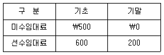
- ￦500
- ￦600
- ￦700
- ￦800
- ￦900
(정답률: 24%)
45. 포괄손익계산서의 보험료가 ￦500이고, 기말의 수정분개가 다음과 같을 경우 수정전시산표와 기말 재무상태표의 선급보험료 금액으로 가능한 것은? (순서대로 수정전시표의 선급보험료, 기말 재무상태표의 선급보험료)
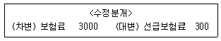
- ￦1,300, ￦1,500
- ￦2,000, ￦1,700
- ￦2,500, ￦2,800
- ￦2,500, ￦3,000
- ￦3,000, ￦2,500
(정답률: 8%)
46. 다음 자료를 이용하여 계산된 기말자본 금액은?
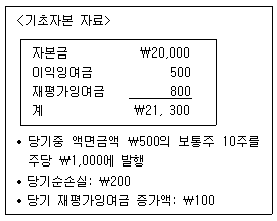
- ￦26,200
- ￦29,800
- ￦30,⑤0
- ￦31,200
- ￦33,200
(정답률: 15%)
47. 재고자산의 회계처리에 관한 설명으로 옳은 것은?
- 완성될 제품이 원가 이상으로 판매될 것으로 예상하는 경우에는 그 생산에 투입하기위해 보유하는 원재료 및 기타 소모품을 감액하지 아니한다.
- 선입선출법은 기말재고자산의 평가관점에서 현행원가를 적절히 반영하지 못한다.
- 선입선출법은 먼저 매입 또는 생산된 재고자산이 기말에 재고로 남아 있고 가장 최근에 매입 또는 생산된 재고자산이 판매되는 것을 가정한다.
- 통상적으로 상호 교환될 수 없는 재고자산항목의 원가와 특정 프로젝트별로 생산되고 분리되는 재화 또는 용역의 원가는 총평균법을 사용하여 결정한다.
- 총평균법은 계속기록법에 의하여 평균법을 적용하는 것으로 상품의 매입시마다 새로운 평균 단가를 계산한다.
(정답률: 21%)
48. 재무제표 작성원칙에 관한 설명으로 옳지 않은 것은?
- 기업은 현금흐름 정보를 제외하고는 발생기준 회계를 사용하여 재무제표를 작성한다.
- 한국채택국제회계기준의 요구에 따라 공시되는 정보가 중요하지 않다면 그 공시를 제공할 필요는 없다.
- 재무제표가 한국채택국제회계기준의 요구사항을 모두 충족한 경우가 아니라면 한국채택국제회계기준을 준수하여 작성되었다고 기재하여서는 아니 된다.
- 일반적으로 재무제표는 일관성 있게 1년 단위로 작성해야하므로, 실무적인 이유로 특정 기업이 보고기간을 52주로 하는 보고관행은 금지된다.
- 한국채택국제회계기준이 달리 허용하거나 요구하는 경우를 제외하고는 당기 재무제표에 보고되는 모든 금액에 대해 전기 비교정보를 표시한다.
(정답률: 25%)
49. 다음 자료를 이용할 경우 재무상태표에 표시될 현금및현금성자산은?
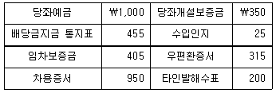
- ￦1,655
- ￦1,970
- ￦2,375
- ￦2,400
- ￦2,725
(정답률: 24%)
50. 20×1년 초 (주)한국은 토지와 건물을 ￦1,200,000에 일괄구입하였다. 취득일 현재토지와 건물을 처분한 회사의 장부금액은 다음과 같으며, 토지와 건물의 공정가치는 각각 ￦1,200,000과 ￦300,000이다. (주)한국이 인식할 토지와 건물의 취득원가는 각각 얼마인가? (순서대로 토지, 건물)
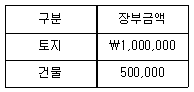
- ￦780,000, ￦120,000
- ￦800,000, ￦400,000
- ￦960,000, ￦240,000
- ￦1,000,000, ￦500,000
- ￦1,200,000, ￦300,000
(정답률: 16%)
51. 재무정보의 질적 특성에 관한 설명으로 옳지 않은 것은?
- 검증가능성은 합리적인 판단력이 있고 독립적인 서로 다른 관찰자가 어떤 서술이 표현충실성이라는 데 대체로 의견이 일치할 수 있다는 것을 의미한다.
- 재무정보에 예측가치, 확인가치 또는 이 둘 모두가 있다면 의사결정에 차이가 나도록 할 수 있다.
- 완벽하게 표현충실성을 위해서 서술은 완전하고, 중립적이며, 오류가 없어야 할 것이다.
- 이해가능성은 정보이용자가 항목 간의 유사점과 차이점을 식별하고 이해할 수 있게 하는 질적 특성이다.
- 적시성은 의사결정에 영향을 미칠 수 있도록 의사결정자가 정보를 제때에 이용가능하게 하는 것을 의미한다.
(정답률: 16%)
52. 다음의 자료를 이용하여 매출총이익법으로 추정한 기말재고액은?
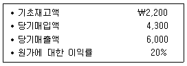
- ￦500
- ￦1,200
- ￦1,500
- ￦1,700
- ￦2,200
(정답률: 15%)
53. (주)한국은 ￦1,000인 기계장치를 신용조건 2/10, n/60으로 외상취득하였다. 다음 자료를 이용하여 기계장치의 취득원가를 계산하면?
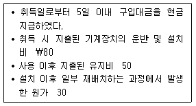
- ￦980
- ￦1,000
- ￦1,010
- ￦1,060
- ￦1,080
(정답률: 20%)
54. (주)한국은 현금 ￦100,000을 이전대가로 지급하고 (주)대한을 합병하였다. 합병일 현재 (주)대한의 식별가능한 자산과 부채의 공정가치가 다음과 같을 때, (주)한국이 인식할 영업권은?
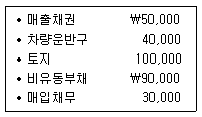
- ￦30,000
- ￦50,000
- ￦70,000
- ￦90,000
- ￦100,000
(정답률: 14%)
55. 유형자산의 재평가에 관한 설명으로 옳은 것은?
- 재평가가 단기간에 수행되며 계속적으로 갱신된다면, 동일한 분류에 속하는 자산이라 하더라도 순차적으로 재평가할 수 없다.
- 감가상각대상 유형자산을 재평가할 때, 그 자산의 최초원가를 재평가금액으로 조정하여야 한다.
- 특정 유형자산을 재평가할 때, 해당 자산이 포함되는 유형자산 분류 전체를 재평가한다.
- 자산의 장부금액이 재평가로 인하여 감소된 경우에 그 자산에 대한 재평가잉여금의 잔액이 있더라도 재평가감소액 전부를 당기손익으로 인식한다.
- 유형자산 항목과 관련하여 자본에 계상된 재평가잉여금은 그 자산이 제거될 때 이익잉여금으로 직접 대체할 수 없다.
(정답률: 23%)
56. (주)한국은 20×1년 7월 초 설비자산(내용연수 4년, 잔존가치 ￦2,000, 연수합계법으로 감가상각)을 ￦20,000에 취득하였다. 20×3년 초 ￦10,000을 지출하여 설비자산의 내용연수를 6개월 더 연장하고, 잔존내용연수는 3년으로 재추정되었으며 잔존가치는 변화가 없다. 20×4년 초 설비자산을 ￦15,000에 처분하였을 때 인식할 처분이익은? (단, 감가상각은 월할상각하며, 원가모형을 적용한다.)
- ￦1,167
- ￦2,167
- ￦3,950
- ￦4,950
- ￦5,500
(정답률: 14%)
57. (주)한국은 20×1년 초 건물(내용연수 10년, 잔존가치 ￦0, 정액법으로 감가상각)을 ￦200,000에 구입하여 투자부동산으로 분류(공정가치모형 선택)하였다. 20×3년 초이 건물을 외부에 ￦195,000에 처분하였을 때 인식할 손익은?
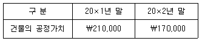
- 손실 ￦15,000
- 손실 ￦5,000
- ￦0
- 이익 ￦25,000
- 이익 ￦35,000
(정답률: 15%)
58. 당기 포괄손익계산서상 대손상각비가 ￦70일 때, 기중 실제 대손으로 확정된 금액은? (단, 대손확정은 손상발생의 객관적인 증거가 파악되었으며, 기중 현금으로 회수된 회수불능 매출채권은 없다.)
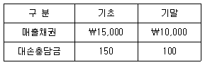
- ￦120
- ￦150
- ￦220
- ￦250
- ￦270
(정답률: 13%)
59. (주)한국은 20×1년 7월 초 (주)대한의 주식 1,000주(액면가액 ￦7,000)를 주당 ￦7,500에 매입하여 공정가치 변동을 당기손익으로 인식하는 금융자산으로 분류 하였다. (주)한국은 20×1년 9월 초 (주)대한의 주식 400주를 주당 ￦8,500에 처분하였고, 20×1년 말 (주)대한 주식의 주당 공정가치는 ￦8,000이다. 동 주식과 관련하여 (주)한국이 20×1년 포괄손익계산서에 인식할 당기이익은?
- ￦500,000
- ￦700,000
- ￦1,000,000
- ￦1,200,000
- ￦1,500,000
(정답률: 21%)
60. (주)한국은 20×1년 초 만기보유 목적으로 (주)대한이 발행한 사채를 ￦1,049,732에 구입하여 상각후원가로 측정한다. 발행조건이 다음과 같을 때, 20×2년 초 동금융자산의 장부금액은? (단, 계산된 금액은 소수점 이하의 단수차이가 발생할 경우 근사치를 선택한다.)
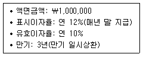
- ￦1,034,7⑤
- ￦1,043,764
- ￦1,⑤5,699
- ￦1,064,759
- ￦1,154,7⑤
(정답률: 21%)
61. 20×1년 초 (주)한국은 상환의무 없는 정부보조금 ￦2,500을 수령하여 ￦10,000의 영업용 차량(내용연수 5년, 잔존가치 ￦0, 정액법으로 감가상각)을 구입하였다. 정부보조금은 자산의 장부금액에서 차감하는 방법으로 회계처리 할 때, 20×1년 포괄손익계산서에 인식할 감가상각비는?
- ￦1,500
- ￦1,750
- ￦2,000
- ￦2,250
- ￦2,500
(정답률: 20%)
62. 충당부채와 우발부채에 관한 설명으로 옳지 않은 것은?
- 충당부채는 재무상태표에 표시되는 부채이나 우발부채는 재무상태표에 표시될 수 없고 주석으로만 기재될 수 있다.
- 충당부채를 현재가치로 평가하기 위한 할인율은 부채의 특유한 위험과 화폐의 시간가치에 대한 현행 시장의 평가를 반영한 세후 이율이다.
- 충당부채로 인식하는 금액은 현재의무를 보고기간 말에 이행하기 위하여 필요한 지출에 대한 최선의 추정치이어야 한다.
- 우발부채는 처음에 예상하지 못한 상황에 따라 변할 수 있으므로, 경제적 효익이 있는 자원의 유출 가능성이 높아졌는지를 판단하기 위하여 우발부채를 지속적으로 평가한다.
- 예상되는 자산 처분이 충당부채를 생기게 한 사건과 밀접하게 관련되었더라도 예상되는 자산 처분이익은 충당부채를 측정하는 데 고려하지 아니한다.
(정답률: 18%)
63. 미래에 현금을 수취할 계약상 권리에 해당하는 금융자산과 이에 대응하여 미래에 현금을 지급할 계약상 의무에 해당하는 금융부채로 옳지 않은 것은?
- 매출채권과 매입채무
- 받을어음과 지급어음
- 대여금과 차입금
- 투자사채와 사채
- 선급금과 선수금
(정답률: 34%)
64. 건설업을 영위하는 (주)한국은 20×1년 초 (주)대한과 공장건설을 위한 건설계약을 ￦1,200,000에 체결하였다. 총 공사기간이 계약일로부터 3년일 때, (주)한국의 20×2년 공사이익은? (단, 동 건설계약의 수익은 진행기준으로 인식하며, 발생한누적계약원가를 기준으로 진행률을 계산한다.)
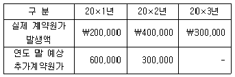
- ￦50,000
- ￦100,000
- ￦150,000
- ￦250,000
- ￦400,000
(정답률: 8%)
65. 당기순이익을 감소시키는 거래가 아닌 것은?
- 거래처 직원 접대 후 즉시 현금 지출
- 영업용 건물에 대한 감가상각비 인식
- 판매사원용 피복 구입 후 즉시 배분
- 영업부 직원에 대한 급여 미지급
- 토지(유형자산)에 대한 취득세 지출
(정답률: 26%)
66. 기중거래에서 잔액이 발생되었을 경우, 기말 재무상태표에 표시되지 않는 계정을 모두 고른 것은?
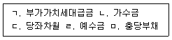
- ㄱ, ㄴ
- ㄱ, ㅁ
- ㄴ, ㄷ
- ㄷ, ㄹ
- ㄹ, ㅁ
(정답률: 25%)
67. 제조업을 영위하는 (주)한국의 현금흐름표에 관한 설명으로 옳지 않은 것은?
- 단기매매목적으로 보유하는 유가증권의 취득과 판매에 따른 현금흐름은 재무활동현금 흐름으로 분류한다.
- 현금흐름표는 회계기간 동안 발생한 현금흐름을 영업활동, 투자활동 및 재무활동으로 분류하여 보고한다.
- 유형자산 또는 무형자산 처분에 따른 현금유입은 투자활동현금흐름으로 분류한다.
- 차입금의 상환에 따른 현금유출은 재무활동현금흐름으로 분류한다.
- 법인세로 인한 현금흐름은 별도로 공시하며, 재무활동과 투자활동에 명백히 관련되지 않는 한 영업활동현금흐름으로 분류한다.
(정답률: 24%)
68. 다음 자료를 이용하여 계산된 매출원가는? (단, 계산의 편의상 1년은 360일, 평균 재고자산은 기초와 기말의 평균이다.)
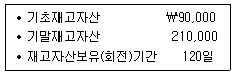
- ￦350,000
- ￦400,000
- ￦450,000
- ￦500,000
- ￦550,000
(정답률: 17%)
69. (주)한국의 유동비율은 150%, 당좌비율은 70%이다. (주)한국이 은행으로부터 자금대출을 받기 위해서는 유동비율이 120% 이상이고 당좌비율이 100% 이상이어야 한다. (주)한국이 자금대출을 받기 위해 취해야 할 전략으로 옳은 것은?
- 기계장치를 현금으로 매입한다.
- 장기차입금을 단기차입금으로 전환한다.
- 외상거래처의 협조를 구해 매출채권을 적극적으로 현금화한다.
- 단기매매금융자산(주식)을 추가 취득하여 현금비중을 줄인다.
- 재고자산 판매를 통해 현금을 조기 확보하고 재고자산을 줄인다.
(정답률: 18%)
70. 다음은 (주)한국이 20×1년 1월 1일 발행한 사채의 회계처리를 위한 자료의 일부이다. 이를 통하여 알 수 있는 내용으로 옳은 것은? (단, 계산된 금액은 소수점이하 첫째 자리에서 반올림한다.)
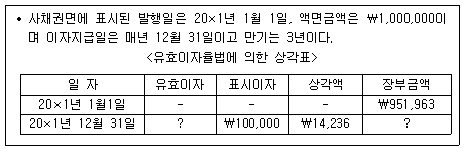
- 사채 발행시 적용된 유효이자율은 연 10%이다.
- 사채 발행시 인식할 사채할인발행차금은 ￦33,801이다.
- 20×1년 말 상각후 사채의 장부금액은 ￦937,727이다.
- 20×2년 말 사채와 관련하여 손익계정에 대체되는 이자비용은 ￦117,857이다.
- 20×3년 1월 1일 사채 전부를 ￦980,000에 상환한 경우 사채상환이익은 ￦2,143이다.
(정답률: 20%)
71. (주)한국의 영업활동으로 인한 현금흐름이 ￦500,000일 때, 다음 자료를 기초로 당기순이익을 계산하면?
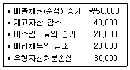
- ￦420,000
- ￦450,000
- ￦520,000
- ￦540,000
- ￦570,000
(정답률: 18%)
72. 다음 중 자본이 증가하는 거래는? (단, 각 거래는 상호독립적이고, 자기주식의 취득은 상법상 정당한 것으로 가정한다.)
- 중간배당(현금배당) ￦100,000을 실시하였다.
- 액면금액이 주당 ￦5,000인 주식 25주를 ￦4,000에 할인발행하였다.
- 자기주식(액면금액 주당 ￦5,000) 25주를 주당 ￦4,000에 취득하였다.
- 당기순손실 ￦100,000이 발생하였다.
- 당기 중 ￦2,100,000에 취득한 매도가능금융자산의 보고기간 말 현재 공정가액은 ￦2,000,000이다.
(정답률: 23%)
73. 제조간접원가가 직접노무원가의 3배일 때 기초재공품 원가는?
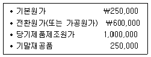
- ￦400,000
- ￦450,000
- ￦500,000
- ￦550,000
- ￦600,000
(정답률: 16%)
74. (주)한국은 보조부문 A와 B, 제조부문 X와 Y를 가지고 있다. 단계배부법을 적용할 때 제조부문 X에 집계된 부문원가 총액은? (단, 보조부문 B부터 배부한다.)
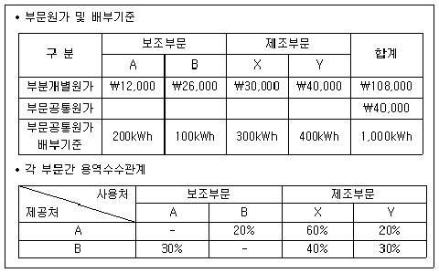
- ￦71,400
- ￦73,670
- ￦75,750
- ￦76,400
- ￦77,600
(정답률: 14%)
75. (주)한국은 표준원가계산제도를 도입하고 있다. 지난 달 직접재료 600kg을 ￦240,000에 구입하였고, 이 가운데 450kg을 제품생산에 투입하였다. 제품단위당 표준직접재료수량은 4.0kg이며, 예산 생산량은 150단위이다. 직접재료원가의 가격 차이는 ￦4,500(유리)이었고, 수량차이는 ￦13,940(불리)이었다. 실제 생산량은? (단, 가격차이 분석시점을 분리하지 않는다.)
- 104단위
- 108단위
- 110단위
- 118단위
- 121단위
(정답률: 4%)
76. 원가에 관한 설명으로 옳은 것은?
- 기회원가는 미래에 발생할 원가로서 의사결정시 고려하지 않는다.
- 관련범위 내에서 혼합원가는 조업도가 0이라도 원가는 발생한다.
- 관련범위 내에서 생산량이 감소하면 단위당 고정원가도 감소한다.
- 관련범위 내에서 생산량이 증가하면 단위당 변동원가도 증가한다.
- 통제가능원가란 특정 관리자가 원가발생을 통제할 수는 있으나 책임질 수 없는 원가를 말한다.
(정답률: 8%)
77. (주)한국은 직접노무시간을 기준으로 제조간접원가를 예정배부하고 있다. 20×1년도 예산 직접노무시간은 20,000시간이며, 제조간접원가 예산은 ￦640,000이다. 20×1년도 제조간접원가 실제 발생액은 ￦700,000이고, ￦180,000이 과대배부되었다. 실제 직접노무시간은?
- 16,250시간
- 18,6⑤시간
- 24,450시간
- 25,625시간
- 27,500시간
(정답률: 8%)
78. (주)한국은 선입선출법에 의한 종합원가계산제도를 채택하고 있다. 직접재료원가는 공정초에 전량 투입되고, 전환원가(또는 가공원가)는 공정 전반에 걸쳐 균등하게 발생한다. 품질검사는 전환원가 완성도 60% 시점에서 이루어진다. 원가계산결과 정상공손원가가 ￦32,000이었다면 완성품에 배분될 정상공손원가는?
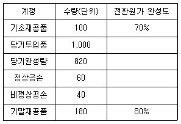
- ￦25,600
- ￦26,240
- ￦26,760
- ￦27,200
- ￦27,560
(정답률: 4%)
79. (주)한국은 20×1년도 예산자료를 다음과 같이 예측하였다. 만약 판매량이 20% 증가한다면 영업이익은 얼마나 증가하는가?
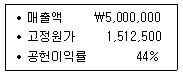
- ￦137,500
- ￦220,000
- ￦302,500
- ￦380,500
- ￦440,000
(정답률: 8%)
80. (주)한국은 20×1년 초 설립되었으며, 20×1년도에 제품 45,000단위를 생산할 계획이다. 제품은 하나의 공정을 거쳐 완성되며, 원재료는 공정초에 전량 투입된다. 제품 단위당 원재료 3kg이 필요하고, kg당 구입가격은 ￦2이다. 기말원재료와 기말재공품으로 23,000kg과 2,000단위를 보유할 계획이다. 20×1년도 원재료 구입예산은?
- ￦212,000
- ￦270,000
- ￦294,000
- ￦316,000
- ￦328,000
(정답률: 11%)
3과목: 공동주택시설개론
81. 건축물에 작용하는 하중에 관한 설명으로 옳은 것은?
- 마감재의 자중은 고정하중에 포함하지 않는다.
- 풍하중은 설계풍압에 유효수압면적을 합하여 산정한다.
- 하중을 장기하중과 단기하중으로 구분하는 경우 지진하중은 장기하중에 포함된다.
- 조적조 칸막이벽은 고정하중으로 간주하여야 한다.
- 기본지상적설하중은 재현기간 10년에 대한 수직 최심적설깊이를 기준으로 하며 지역에 따라 다르다.
(정답률: 52%)
82. 건축 구조 형식에 관한 설명으로 옳지 않은 것은?
- 라멘 구조는 기둥과 보가 강접합되어 이루어진 구조이다.
- 트러스 구조는 가늘고 긴 부재를 강접합해서 삼각형의 형상으로 만든 구조이다.
- 플랫슬래브 구조는 보가 없는 구조이다.
- 아치 구조는 주로 압축력을 전달하게 하는 구조이다.
- 내력벽식 구조는 내력벽과 바닥판에 의해 하중을 전달하는 구조이다.
(정답률: 33%)
83. 기초 및 지하층 공사에 관한 설명으로 옳지 않은 것은?
- RCD(reverse circulation drill) 공법은 대구경 말뚝공법의 일종으로 깊은 심도까지 시공할 수 있다.
- 샌드 드레인(sand drain) 공법은 연약 점토질 지반을 압밀하여 물을 제거하는 지반개량공법이다.
- 오픈 컷(open cut) 공법은 흙막이를 설치하지 않고 흙의 안식각을 고려하여 기초파기하는 공법이다.
- 슬러리 월(slurry wall)은 터파기 공사의 흙막이벽으로 사용함과 동시에 구조벽체로 활용할 수 있다.
- 탑 다운(top down) 공법은 넓은 작업공간을 필요로 하므로 도심지 공사에 적절하지 않은 공법이다.
(정답률: 58%)
84. 기초구조에 관한 설명으로 옳지 않은 것은?
- 독립기초에 배근하는 주철근은 부철근보다 위쪽에 설치되어야 한다.
- 말뚝의 개수를 결정하는 경우 사용하중(service load)을 적용한다.
- 기초판의 크기를 결정하는 경우 사용하중을 적용한다.
- 먼저 타설하는 기초와 나중 타설하는 기둥을 연결하는데 사용하는 철근은 장부철근(dowel bar)이다.
- 2방향으로 배근된 기초판의 경우 장변 방향의 철근은 단면 폭 전체에 균등하게 배근한다.
(정답률: 43%)
85. 철근콘크리트 구조의 변형 및 균열에 관한 설명으로 옳지 않은 것은?
- 크리프(creep) 변형은 지속하중으로 인해 콘크리트에 발생하는 장기 변형이다.
- 콘크리트의 단위수량이 증가하면 블리딩과 건조수축이 증가한다.
- AE제는 동결융해에 대한 저항성을 감소시킨다.
- 보의 중앙부 하부에 발생한 균열은 휨모멘트가 원인이다.
- 침하균열은 콘크리트 타설 후 자중에 의한 압밀로 철근 배근을 따라 수평부재 상부면에 발생하는 균열이다.
(정답률: 47%)
86. 철근콘크리트 공사에 관한 설명으로 옳은 것은?
- 항복강도 300 MPa인 이형철근은 SR300으로 표시하며 양단면 색깔은 황색이다.
- 철근과 콘크리트의 선팽창계수는 차이가 크므로 서로 다른 값으로 간주한다.
- 내구성이 중요한 구조물에서 시험에 의해 콘크리트 압축강도가 10 MPa 이상이면 기둥 거푸집을 해체할 수 있다.
- 이형철근으로 제작한 늑근(stirrup)의 갈고리는 생략할 수 있다.
- 지름이 다른 철근을 이음하는 경우 이음길이는 굵은 철근을 기준으로 계산한다.
(정답률: 45%)
87. 콘크리트 공사에 관한 설명으로 옳지 않은 것은?
- 보통 콘크리트에 사용되는 골재의 강도는 시멘트 페이스트 강도 이상이어야 한다.
- 콘크리트 제조 시 혼화제(混和劑)의 양은 콘크리트 용적 계산에 포함된다.
- 센트럴 믹스트(central-mixed) 콘크리트는 믹싱 플랜트에서 비빈 후 현장으로 운반하여 사용하는 콘크리트이다.
- 콘크리트 배합 시 골재의 함수 상태는 표면건조 내부 포수상태 또는 그것에 가까운 상태로 사용하는 것이 바람직하다.
- 콘크리트 배합 시 단위 수량은 작업이 가능한 범위 내에서 될 수 있는 한 적게 되도록 시험을 통해 정하여야 한다.
(정답률: 47%)
88. 철골구조에 관한 설명으로 옳지 않은 것은?
- H형강보의 플랜지는 전단력, 웨브는 휨모멘트에 저항한다.
- H형강보에서 스티프너(stiffener)는 전단 보강, 덧판(cover plate)은 휨 보강에 사용된다.
- 볼트의 지압파괴는 전단접합에서 발생하는 파괴의 일종이다.
- 절점 간을 대각선으로 연결하는 부재인 가새는 수평력에 저항하는 역할을 한다.
- 압축재 접합부에 볼트를 사용하는 경우 볼트 구멍의 단면결손은 무시할 수 있다.
(정답률: 35%)
89. 철골공사에서 용접금속이 모재에 완전히 붙지 않고 겹쳐 있는 용접 결함은?
- 크랙(crack)
- 공기구멍(blow hole)
- 오버랩(overlap)
- 크레이터(crater)
- 언더컷(under cut)
(정답률: 50%)
90. 조적공사에 관한 설명으로 옳지 않은 것은?
- 공간쌓기는 벽돌 벽의 중간에 공간을 두어 쌓는 것으로 별도 지정이 없을 시 안쪽을 주벽체로 한다.
- 조적조 내력벽으로 둘러싸인 부분의 바닥면적은 80m2를 넘을 수 없다.
- 조적조 내력벽의 길이는 10 m 이하로 한다.
- 콘크리트 블록의 하루 쌓는 높이는 1.5 m 이내를 표준으로 한다.
- 내화벽돌의 줄눈너비는 별도 지정이 없을 시 가로, 세로 6 mm를 표준으로 한다.
(정답률: 47%)
91. 다음 중 수경성 미장재료로 옳은 것을 모두 고른 것은?
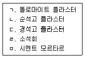
- ㄱ, ㄴ, ㄷ
- ㄱ, ㄴ, ㄹ
- ㄱ, ㄹ, ㅁ
- ㄴ, ㄷ, ㅁ
- ㄷ, ㄹ, ㅁ
(정답률: 48%)
92. 표면이 거친 석기질 타일로 주로 외부바닥이나 옥상 등에 사용되는 것은?
- 테라코타(terra cotta) 타일
- 클링커(clinker) 타일
- 모자이크(mosaic) 타일
- 폴리싱(polishing) 타일
- 파스텔(pastel) 타일
(정답률: 47%)
93. 창호에 관한 설명으로 옳은 것은?
- 알루미늄 창호는 강재에 비해 비중이 낮고 내알칼리성이 우수하다.
- 갑종 방화문은 강제틀에 두께 0.3 mm 이상의 u6벰h강판을 한쪽 면에 붙인 것이다.
- 여밈대는 미닫이 또는 여닫이 문짝이 서로 맞닿는 선대를 말한다.
- 나이트 래치는 미닫이창호의 선대에 달아 잠그는데 사용되는 철물이다.
- 오르내리 꽂이쇠는 여닫이창호에 상하 고정용으로 달아서 개폐상태를 유지하는데 사용한다.
(정답률: 39%)
94. 유리가 파괴되어도 중간막(합성수지)에 의해 파편이 비산되지 않도록 한 안전유리는?
- 강화유리
- 배강도유리
- 복층유리
- 접합유리
- 망입유리
(정답률: 38%)
95. 방수공법에 관한 설명으로 옳지 않은 것은?
- 도막방수란 액상형 방수 재료를 콘크리트 바탕에 바르거나 뿜칠하여 방수층을 형성하는 공법이다.
- 시멘트 액체방수 공사에서 방수 모르타르 바탕면은 최대한 매끄럽게 처리해야 한다.
- 아스팔트 옥상 방수에는 지하실 방수보다 연화점이 높은 아스팔트를 사용한다.
- 아스팔트 방수는 보호누름이 필요하다.
- 아스팔트 방수는 시멘트 액체 방수보다 방수층의 신축성이 크다.
(정답률: 50%)
96. 아스팔트 방수에서 바탕면과 방수층의 부착이 잘 되도록 하기 위하여 바르는 것은?
- 스트레이트 아스팔트
- 블로운 아스팔트
- 아스팔트 컴파운드
- 아스팔트 루핑
- 아스팔트 프라이머
(정답률: 50%)
97. 크롬산아연과 알키드수지로 구성된 도료로서 알루미늄판의 초벌용으로 적당한 것은?
- 광명단
- 연시안아미드 도료
- 징크로메이트 도료
- 그래파이트 도료
- 이온교환수지 도료
(정답률: 47%)
98. 홈통공사에 관한 설명으로 옳지 않은 것은?
- 선홈통은 벽면과 틈이 없게 밀착하여 고정한다.
- 처마홈통의 양쪽 끝은 둥글게 감되 안감기를 원칙으로 한다.
- 처마홈통은 선홈통 쪽으로 원활한 배수가 되도록 설치한다.
- 처마홈통의 길이가 길어질 경우, 신축이음을 둔다.
- 장식홈통은 선홈통 상부에 설치되어 우수방향을 돌리거나, 집수 등으로 인한 넘쳐 흐름을 방지하는 역할을 한다.
(정답률: 52%)
99. 원가개념에 관한 설명으로 옳지 않은 것은?
- 개산견적은 입찰가격을 결정하는데 기초가 되는 정밀견적으로 입찰견적이라고도 한다.
- 예정가격작성기준상 직접공사비는 재료비, 직접노무비, 직접공사경비로 구성된다.
- 산업안전보건관리비는 작업현장에서 산업재해 및 건강장해를 예방하기 위한 비용으로 경비에 포함된다.
- 수장용 합판의 할증률은 5 %이다.
- 지상 30층 건물의 경우 품의 할증률은 7 %이다.
(정답률: 46%)
100. 길이 10m, 높이 4m, 두께 1.0B인 벽체를 표준형 콘크리트(시멘트)벽돌(190 × 90 × 57mm)로 쌓을 때의 소요량은? (단, 줄눈은 10mm로 한다.)
- 3,000 매
- 3,150 매
- 5,960매
- 6,258매
- 8,960 매
(정답률: 41%)
101. 실내에 설치할 광원의 수를 광속법으로 결정하는데 필요한 요소를 모두 고른 것은?
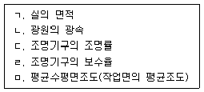
- ㄱ, ㅁ
- ㄷ, ㄹ
- ㄱ, ㄴ, ㄷ
- ㄴ, ㄷ, ㄹ, ㅁ
- ㄱ, ㄴ, ㄷ, ㄹ, ㅁ
(정답률: 52%)
102. 급수설비에 관한 설명으로 옳지 않은 것은?
- 관경을 결정하기 위하여 기구급수 부하단위를 이용하여 동시사용 유량을 산정한다.
- 초고층 건물에서는 급수압이 최고사용압력을 넘지 않도록 급수조닝을 한다.
- 급수배관이 벽이나 바닥을 통과하는 부위에는 콘크리트 타설 전 슬리브를 설치한다.
- 기구로부터 고가수조까지의 높이가 25 m일 때, 기구에 발생하는 수압은 2.5 MPa이다.
- 토수구 공간이 확보되지 않을 경우에는 베큠 브레이커(vacuum breaker)를 설치한다.
(정답률: 38%)
103. 급탕설비에 관한 설명으로 옳지 않은 것은?
- 유량을 균등하게 분배하기 위하여 역환수방식을 사용한다.
- 배관내 공기가 머물 우려가 있는 곳에 공기빼기 밸브를 설치한다.
- 팽창관의 도중에는 밸브를 설치해서는 안 된다.
- 일반적으로 급탕관의 관경은 환탕관의 관경보다 크게 한다.
- 수온변화에 의한 배관의 신축을 흡수하기 위하여 팽창탱크를 설치한다.
(정답률: 38%)
104. 화재안전기준상 자동화재탐지설비의 발신기 위치를 표시하는 표시등 설치기준으로 옳은 것은?
- 불빛은 부착면으로부터 15° 이상의 범위 안에서 부착지점으로부터 10m 이내의 어느 곳에서도 쉽게 식별할 수 있는 적색등으로 하여야 한다.
- 불빛은 부착면으로부터 15° 이상의 범위 안에서 부착지점으로부터 10m 이내의 어느 곳에서도 쉽게 식별할 수 있는 황색등으로 하여야 한다.
- 불빛은 부착면으로부터 20° 이상의 범위 안에서 부착지점으로부터 5m 이내의 어느 곳에서도 쉽게 식별할 수 있는 적색등으로 하여야 한다.
- 불빛은 부착면으로부터 20° 이상의 범위 안에서 부착지점으로부터 20m 이내의 어느 곳에서도 쉽게 식별할 수 있는 황색등으로 하여야 한다.
- 불빛은 부착면으로부터 20° 이상의 범위 안에서 부착지점으로부터 20m 이내의 어느 곳에서도 쉽게 식별할 수 있는 녹색등으로 하여야 한다.
(정답률: 59%)
1⑤. 급수설비에 관한 설명으로 옳지 않은 것은?
- 경도가 높은 물은 기기내 스케일 생성 및 부식 등의 원인이 된다.
- 수주분리가 일어나기 쉬운 배관 부분에 수격작용이 발생할 수 있다.
- 급수설비는 기구의 사용목적에 적절한 수압을 확보해야 한다.
- 고가수조방식에 비해 수도직결방식이 수질오염 가능성이 낮고, 설비비가 저렴하다.
- 펌프를 병렬로 연결하여 운전대수를 변화시켜 양수량 및 토출압력을 조절하는 것을 변속운전방식이라 한다.
(정답률: 45%)
106. 시간당 1,000리터의 물을 10℃에서 87℃로 가열하기 위한 최소 가스용량(m3/h)은? (단, 가스발열량은 11,000 kcal/Nm3, 보일러의 열효율은 70 %, 물의 비열은 4.2 kJ/kgK이다.)
- 5
- 7
- 10
- 15
- 18
(정답률: 22%)
107. 화재안전기준상 유도등 및 유도표지에 관한 내용으로 옳지 않은 것은?
- 피난구유도등은 피난구의 바닥으로부터 높이 1.5 m 이상으로서 출입구에 인접하도록 설치해야 한다.
- 복도통로유도등은 바닥으로부터 높이 1.2 m의 위치에 설치해야 한다.
- 피난구유도표지란 피난구 또는 피난경로로 사용되는 출입구를 표시하여 피난을 유도하는 표지를 말한다.
- 계단통로유도등은 바닥으로부터 높이 1 m 이하의 위치에 설치해야 한다.
- 거실통로유도등은 구부러진 모퉁이 및 보행거리 20 m 마다 설치해야 한다.
(정답률: 50%)
108. 위생기구설비에 관한 설명으로 옳지 않은 것은?
- 위생기구의 재질은 흡습성이 적어야 한다.
- 로우탱크식 대변기는 탱크에 물이 저장되는 시간이 불필요하므로 연속사용이 많은 화장실에 주로 사용한다.
- 세출식 대변기는 유수면의 수심이 얕아서 냄새가 발산되기 쉽다.
- 위생기구 설비의 유닛(unit)화는 공기단축, 시공정밀도 향상 등의 장점이 있다.
- 사이펀식 대변기는 세락식에 비해 세정능력이 우수하다.
(정답률: 49%)
109. 온수난방에 관한 설명으로 옳은 것은?
- 증기난방에 비해 보일러 취급이 어렵고, 배관에서 소음이 많이 발생한다.
- 관내 보유수량 및 열용량이 커서 증기난방보다 예열시간이 길다.
- 증기난방에 비해 난방부하의 변동에 따라 방열량 조절이 어렵고 쾌감도가 낮다.
- 잠열을 이용하는 방식으로 증기난방에 비해 방열기나 배관의 관경이 작아진다.
- 겨울철 난방을 정지하였을 경우에도 동결의 우려가 없다.
(정답률: 49%)
110. 조명설비에 관한 설명으로 옳지 않은 것은?
- 명시조명을 위해서는 목적에 적합한 조도를 갖도록 하고 현휘(glare)발생을 적게 해야 한다.
- 연색성은 광원 선정 시 고려사항 중 하나이다.
- 코브조명은 건축화 조명의 일종이며, 직접조명보다 조명률이 높다.
- 조명설계 과정에는 소요조도 결정, 광원 선택, 조명방식 및 기구 선정, 조명기구 배치등이 있다.
- 전반조명과 국부조명을 병용할 경우, 전반조명의 조도는 국부조명 조도의 1/10이상이 바람직하다.
(정답률: 48%)
111. 지능형 홈네트워크 설비 설치 및 기술기준에 관한 내용으로 옳은 것은?
- 단지서버실의 출입문은 폭 0.7m, 높이 1.8m의 잠금장치가 있는 출입문으로 설치하여야 한다.
- 단지서버실의 면적은 2m2이하로 한다.
- 단지서버실이란 TPS실이라 하며, 통신용 파이프 샤프트 및 통신단자함을 설치하기 위한 공간을 말한다.
- 세대단자함은 500mm × 400mm × 80mm(깊이) 크기로 설치할 것을 권장한다.
- 통신배관실은 외부의 청소 등에 의한 먼지, 물 등이 들어오지 않도록 40mm의 문턱을 설치해야만 한다.
(정답률: 43%)
112. 바닥복사난방에 관한 설명으로 옳지 않은 것은?
- 난방코일이 바닥에 매설되어 균열이나 누수 시 수리가 어렵다.
- 각 방으로 연결된 난방코일의 길이가 달라지면, 그 저항 손실도 달라진다.
- 난방코일의 간격은 열손실이 많은 측에서는 넓게, 적은 측에서는 좁게 해야 한다.
- 난방코일의 매설 깊이는 바닥표면 온도분포와 균열 등을 고려하여 결정한다.
- 열손실을 막기 위해 방열면 반대측에 단열층 설치가 필요하다.
(정답률: 50%)
113. 도시가스 설비 배관에 관한 설명으로 옳지 않은 것은?
- 배관은 부식되거나 손상될 우려가 있는 곳은 피해야 한다.
- 배관의 신축을 흡수하기 위해 필요 시 배관 도중에 이음을 설치한다.
- 건물의 규모가 크고 배관 연장이 긴 경우에는 계통을 나누어 배관한다.
- 배관은 주요 구조부를 관통하지 않도록 배관해야 한다.
- 초고층 건물의 상층부로 공기보다 가벼운 가스를 공급할 경우, 압력이 떨어지는 것을 고려해야 한다.
(정답률: 40%)
114. 전력설비에 관한 설명으로 옳지 않은 것은?
- 분전반은 보수나 조작에 편리하도록 복도나 계단 부근의 벽에 설치하는 것이 좋다.
- 분전반은 배전반으로부터 배선을 분기하는 개소에 설치한다.
- UPS는 교류 무정전 전원장치를 말한다.
- 전선의 굵기 선정 시 허용전류, 전압강하, 기계적 강도 등을 고려한다.
- 부등률이 높을수록 설비이용률이 낮다.
(정답률: 47%)
115. 전기설비에 관한 설명으로 옳지 않은 것은?
- 전선의 저항은 전선의 단면적에 비례한다.
- 전선의 저항은 전선길이가 길수록 커진다.
- 단상 교류의 유효전력은 전압, 전류, 역률의 곱이다.
- 역률은 유효전력을 피상전력으로 나눈 값이다.
- 역률을 개선하기 위해 콘덴서를 설치한다.
(정답률: 43%)
116. 화재안전기준상 피난기구에 관한 용어의 정의로 옳지 않은 것은?
- 다수인피난장비란 화재 시 2인 이상의 피난자가 동시에 해당층에서 지상 또는 피난층으로 하강하는 피난기구를 말한다.
- 구조대란 포지 등을 사용하여 자루형태로 만든 것으로서 화재 시 사용자가 그 내부에 들어가서 내려옴으로써 대피할 수 있는 것을 말한다.
- 피난사다리란 화재 시 긴급대피를 위해 사용하는 사다리를 말한다.
- 간이완강기란 사용자의 몸무게에 따라 자동적으로 내려올 수 있는 기구 중 사용자가 교대하여 연속적으로 사용할 수 있는 것을 말한다.
- 승강식피난기란 사용자의 몸무게에 의하여 자동으로 하강하고 내려서면 스스로 상승하여 연속적으로 사용할 수 있는 무동력 승강식피난기를 말한다.
(정답률: 52%)
117. 급수설비에 관한 설명으로 옳은 것은?
- 수도직결방식은 상수도관의 공급압력에 의해 급수하는 방식으로 주로 대규모 및 고층 건물에 사용된다.
- 펌프직송방식은 기계실내 저수조 설치가 필요없다.
- 고가수조방식은 건물의 옥상이나 높은 곳에 양수하여 하향식으로 급수한다.
- 수도직결방식은 건물 내 정전 시 급수가 불가능하다.
- 수도직결 계통의 수압시험은 배관의 최저부에서 최소 7.5 kg/cm2 압력으로 실시한다.
(정답률: 50%)
118. 관경 50 mm로 시간당 3,000 kg의 물을 공급하고자 할 때, 배관 내 유속(m/s)은 약 얼마인가? (단, 배관속의 물은 비압축성, 정상류로 가정하며, 원주율은 3.14로 한다.)
- 0.15
- 0.42
- 1.32
- 4.14
- 13.0
(정답률: 27%)
119. 배수설비에 관한 설명으로 옳은 것은?
- 배수는 기구배수, 배수수평주관, 배수수직주관의 순서로 이루어지며, 이 순서대로 관경은 작아져야 한다.
- 청소구는 배수수평지관의 최하단부에 설치해야만 한다.
- 배수관 트랩 봉수의 유효깊이는 주로 50～100 cm정도로 해야 한다.
- 기구를 배수관에 직접 연결하지 않고, 도중에 끊어서 대기에 개방시키는 배수방식을 간접배수라 한다.
- 각개 통기관은 기구의 넘침선 아래에서 배수수평주관에 접속한다.
(정답률: 32%)
120. 비상용승강기의 승강장 기준에 관한 내용으로 옳지 않은 것은?
- 벽 및 반자가 실내에 접하는 부분의 마감재료(마감을 위한 바탕을 포함한다)는 난연재료로 할 것
- 채광이 되는 창문이 있거나 예비전원에 의한 조명설비를 할 것
- 승강장의 바닥면적은 비상용승강기 1대에 대하여 6m2 이상으로 할 것. 다만, 옥외에 승강장을 설치하는 경우에는 그러하지 아니하다.
- 승강장 출입구 부근의 잘 보이는 곳에 당해 승강기가 비상용 승강기임을 알 수 있는 표지를 할 것
- 피난층이 있는 승강장의 출입구(승강장이 없는 경우에는 승강로의 출입구)로부터 도로 또는 공지(공원∙광장 기타 이와 유사한 것으로서 피난 및 소화를 위한 당해 대지에의 출입에 지장이 없는 것을 말한다)에 이르는 거리가 30m 이하일 것
(정답률: 38%)